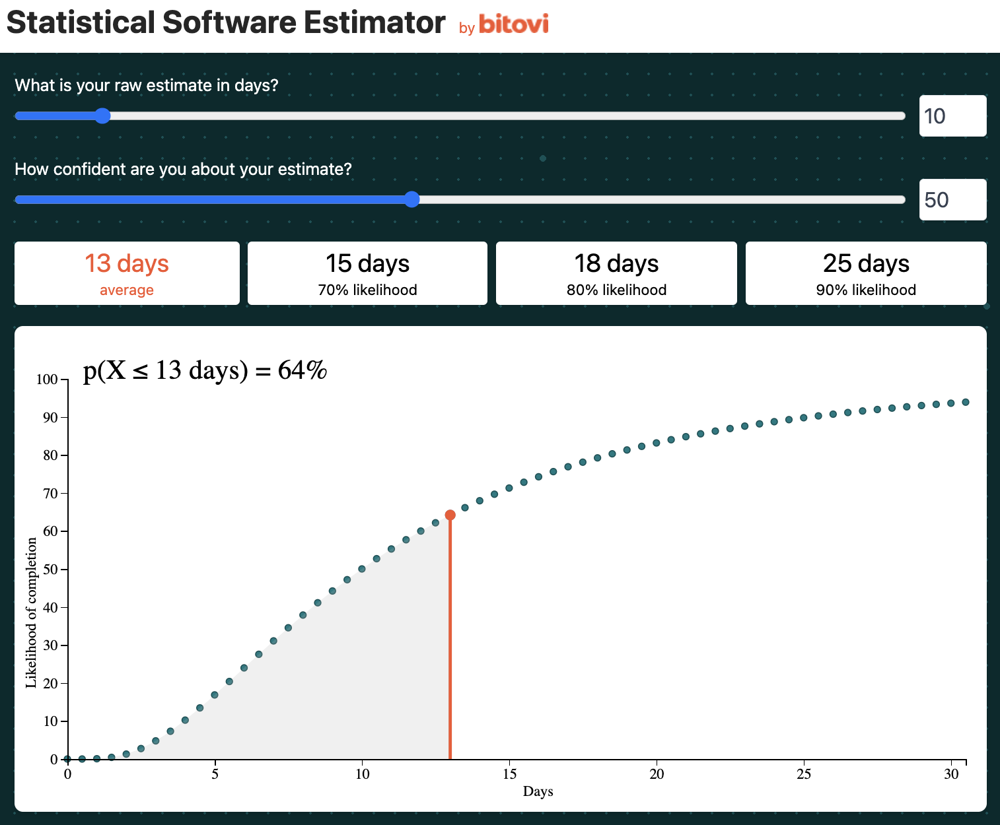
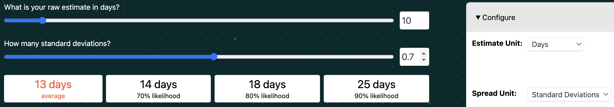

Estimating page
Learn how to build a plan and estimate the delivery time of an initiative.
Overview
The purpose of estimating is to gauge the costs associated with implementing an initiative. Understanding the costs of an initiative helps perform a cost/benefit assessment and ultimately prioritize the product backlog. You will learn:
Why estimating is still valuable
Bitovi’s preferred statistical approach to estimating
How to break down an initiative into epics that can be individually estimated
How to put those epics into an Advanced Roadmap plan in Jira
How this course’s estimation approach differs from other approaches.
For the exercise, you will break down your work into epics and work with the other trainees to estimate the work. Finally, you’ll make a plan for the work in Advanced Roadmaps that shows the work plan similar to the image above.
The following is the Google Slides presentation for much of this material:
NOTE: The presentation on how to split initiatives into epics is below!
Why estimate
Estimating software is a notoriously fraught process, especially earlier in the process. Not only can estimates be off by orders of magnitude, but there’s sometimes career jeopardy. Providing an estimate and not delivering on it can be seen as a failure.
Despite this, evaluating the cost and benefits of an initiative is exactly what a product team needs to do if it’s going to make wise decisions on what initiatives to pursue. Some form of cost estimate is needed.
Furthermore, when organizations are not conditioned to building incremental plans and package too many features in an initiative, a lengthy estimate is often the only way to get agreement to split initiatives.
For these reasons, estimating is still a powerful tool in the Program Manager’s toolkit. Lets take a look at different approaches to estimating and then discuss this training’s approach.
Approaches to Estimating
There’s a wide variety of estimation approaches. For example, T-shirt sizes, story points, complexity, and days/weeks/months are common ways of estimating. There’s also a what and when component to estimating. For example, folks might estimate initiatives first, epics later, and stories right before the sprint. Some teams will mix and match. For example, teams might use t-shirt sizes for initiatives, weeks for epics, and story points for stories. Different estimation techniques can solve different problems.
This training is focused on estimating for the purposes of prioritizing and eventually managing initiatives. Our goal is to create a highly accurate estimate and a plan that can be used to manage work in as short a time as possible. We believe a statistical approach to estimating epics provides the best “bang for your estimating buck”.
We will review our approach, discuss other common approaches, and then share the benefits of the statistical approach.
A statistical approach to estimating
This training uses a statistical approach for estimating work. Instead of representing estimates with one value (examples: 2 weeks, or 34 story points), we represent the estimate with two values:
A median time value. Example:
10 days.A probability distribution value. Example:
80% confident.
This results in a probability density function that looks like the following:
The graph above shows how likely the work is to complete on any day.
We can also graph how likely the work is to complete by that day or earlier as follows:
The shape of the graph and the probability distribution we use to model the likelihood of completion is log-normal. Log-normal distributions better model the likelihood that work “blows up.” When things go wrong, things can go very wrong. The log-normal distribution is more heavily weighted towards the chances that work will take longer than expected.
There’s good evidence that this is how software project completion times behave. Read https://erikbern.com/2019/04/15/why-software-projects-take-longer-than-you-think-a-statistical-model.html for more background.
In this training, we break initiatives into epics. When estimating each epic, we ask teams to provide estimates in both Story Points and Confidence. We use “Confidence” to inflate the original story point estimate. For example, if an epic was estimated at 10 story points at 80% confidence, we will inflate the 10 story points to 15 story points based on the log-normal statistical model.
We do NOT have strong opinions on estimating time through story points or more direct approaches (like using days or weeks). We use “Story Points” in this training because it’s pre-configured in Jira.
However, we are strong advocates for representing the probability distribution of when the work will complete.
If this is confusing, don’t worry, we built an app to help teams understand how it works.
üé¨ Open the https://bitovi.github.io/statistical-software-estimator/ in your browser.

By default, the tool uses “Days” instead of “Story Points” and “Velocity” to represent a median time estimate. We use days for now because it makes things more concrete than story points.
Notice the tool defaults to an estimate of 10 days and a confidence of 50%. It uses these values to predict the work has a 90% chance of being complete in 25 days.
This 90% likelihood value of 25 days is what we use in our projections of the timeline.
Also, notice the graph below, this shows how the likelihood of completion gets higher with the number of days:
üé¨ You can mouse over this graph, and it will show the probability of success at specific days.
üé¨ To see how the graph changes as your confidence changes, update the confidence slider. We suggest starting with 100% confidence and lowering from there.
Notice that we are using “Confidence,” not “Standard Deviation,” to shape the probability distribution. For most people, a confidence percentages is easier to think about than standard deviations. The tool lets you switch to using standard deviations.

For stats nerds, the Statstical Estimator uses 10% confidence to represent a standard deviation of 1.3 and 100% confidence to represent a standard deviation of 0. These values are mostly arbitrary. A 10% confidence will more than 5x the original estimate. This mapping of confidences to standard deviations has worked well for Bitovi.
In the next sections, we will walk through how to break down initiatives into epics, get estimates and confidences from the team, and use the statistical estimator tool to make plans in Jira.
Breaking down Initiatives into Epics
We suggest breaking down initiatives into epics in a very similar manner to how we suggest breaking down epics into stories … with bullet points!
On a high level, we suggest repeating for each step of each use case:
Identify the “surface” work to be done and the team to do it. Create an epic for that team.
Partially refine what is in and out of scope
Identify any dependencies on other teams.
This process is explained in the following: Google Slides presentation:
The presentation walks through breaking down the initiative into the following 8 epics:
% Off Promotion Code and Marketing Campaign
...
Epics
Store - Create a Promotion
+ Code, Percent, Start / EndMarketing - Create and publish ad
- Marketing - Create promotion
Order - Add a promotion to the cart
+ Update pricing
+ Update checkout page with discount
+ Update order data with promotion usage
+ Show discount on receipt
- Add promotions on checkout page
- Remove promotion
- Handle errors
¿Are there custom taxes on discounts anywhere?- Store - Verify the promotion is available
Order - Wrong promotion entered
+ Discount is not valid
- Any other error messageOrder - Remove promotion from cart + Add promotions to checkout page
Order - Promotion end-date error handling
+ Show a nice error message
...
Estimating Epics
Once you have a list of epics, you should review with the team to ensure the plan makes sense. It’s also a good idea to talk through how to restructure the work to maximize early customer value and avoid risk. We will discuss this more in breaking long poles.
Once the plan makes sense, it’s time to estimate each epic. For this training, we are going to be using Story Points and Confidence. We go through each epic and write the Story Points and Confidence in square brackets next to the epic like [15 50%].
For example, after estimating the promotion initiative’s “shell” epics, the Epic section of the initiative looks like this:
% Off Promotion Code and Marketing Campaign
...
Epics
Store - Create a Promotion
[10 70%]+ Code, Percent, Start / EndMarketing - Create and publish ad
[3 months from now]- Marketing - Create promotion
[1 day]
- Marketing - Create promotion
Order - Add a promotion to the cart
[30 50%]
+ Update pricing
+ Update checkout page with discount
+ Update order data with promotion usage
+ Show discount on receipt
- Add promotions on checkout page
- Remove promotion
- Handle errors
¿Are there custom taxes on discounts anywhere?- Store - Verify the promotion is available
[5 70%]
- Store - Verify the promotion is available
Order - Wrong promotion entered
[10 80%]
+ Discount is not valid
- Any other error messageOrder - Remove promotion from cart
[5 80%]Order - Promotion end-date error handling
[5 50%]
+ Show a nice error message
...
Note: In this example, the marketing team doesn’t work like the rest of the product teams. They just said when they will be done creating the ad and how long they expect to take to create the promotion.
Building a Dependency Plan
After estimating the epics, the next step is to build a dependency plan in Advanced Roadmaps. It will look something like:
A dependency plan has epics and blockers for each team. However, each epic is the same size. Visualizing epic dependencies, even without knowing timings, is a useful spot check to making sure you and the team understand the shape of the work. In the next section, we will build a timed plan that has the epic sizing right:
In this section, we will:
- Create all the epics
- Add "Story points median" and "Story points confidence" to each epic
- Sort and space the epics by dependencies
Create all the epics
The next step is to create all the epics for your initiative.
Make sure to create each epic for the appropriate product team:
When you are done, click “Review Changes” and Save your changes.
Add Story Points Median and Story Points Confidence to each epic
For each epic, we will set the Story Points Median and Story Points Confidence field to each epic. To show those fields in the plan, click “Fields”, search for the fields, and add them to the plan.
You should be able to add all the values that are in the Epics section of your initiative. The promotion’s example looks as follows:
Roughly plan epics with blockers
In this step, we want to be able to see the sequence of work and blockers. In order to do this, we need to give each epic a Start date and a Due date. For now, we will:
make each epic one week long
start the first epic at least one month after our latest projected work (we will call this
Temporary start date)
The following is what it looks like to schedule the first epic’s start date. Notice how it’s being positioned a month after “Order Playback,” which is currently in development.
You can set the Due date by moving the right-hand edge of the epic:
Next, create blockers between epics. The indented epics in our initiative’s Epics section block other epics. The following makes “Store - Verify the promotion is available” block “Order - Add a promotion to cart”:
A red line shows that “Add a promotion to cart” should come after “Verify the promotion is available”.
Adjust the timeline accordingly:
Also, we suggest sorting the epics, and putting earlier epics towards the top. You can drag and drop epics on the left:

This updates the order as follows:
We will repeat this process for all blockers. The following is the rough work plan:
Note: We are ignoring Marketing’s “Create and publish ad” epic for now. They specified a timeframe they will have this complete by. They are not using story points and confidences.
Building a Timed Plan
The final step is to size each epic according to its adjusted story points. The result looks like:
Visualizing a plan helps:
Ensure the plan makes sense
We are building a plan for the work; however, we are not scheduling it until the Scheduling part of the training.
Scheduling means putting work into specific upcoming sprints, taking into consideration existing work in progress. Planning means illustrating how the work will take place, including the timings of work, but ignoring existing work in progress.
Unfortunately, Jira does not have a way to auto-plan work without moving epics into sprints, so we build a plan by scheduling the initiative’s epics to start several months in the future, beyond when any scheduled work is planned. Later we will use Jira’s auto-scheduling feature to place these epics to start after work in progress.
The following video shows the steps to accomplishing this:
2:55Determine Team Velocities.3:20Enter adjusted "Story points".4:19Adjust epic timings.4:57Repeat setting epic adjusted "Story points" and timing with the Bitovi auto-scheduler by loading just the initiative’s epics with:issuekey in portfolioChildIssuesOf("KEY") and issueType = Epic
The following sub-sections detail the process in writing:
Determine Team Velocities
To size the epics, we first need to decide how much of the team’s velocity will be used for this initiative. “Reports / Velocity Chart” report of Jira. Provides an in-depth explanation of velocity charts in Jira.In short, to see a velocity chart, click reports, then click velocity chart.
You can get past sprint velocities from the table below the velocity chart:
We suggest using an average of past sprint velocities. Next, you need to determine how much of the velocity might be attributed towards your epics.
The promotions example has story-pointed epics for the order and store product teams.
Let’s say that the order team’s velocity is 50 points per sprint, and they typically work on two epics at once. The velocity we will use for order is 25 points per sprint. The store’s velocity is 20, but they work on a single epic at once, so we will use 20 points per sprint for the store team.
Set Story Points and Scale the Epic
Now we will set the adjusted story points for each epic and set the time range of the epic based on team velocity.
To do that, you’ll want to use the https://bitovi.github.io/statistical-software-estimator/?estimateUnit=story+points&outputUnit=story+points. First, let’s configure for “Store - Create a promotion”.
You will want to configure:
Estimate Unit to
Story Points- Estimates were provided in story points.Sprint length in working days to
10- Store uses 2-week sprints.Sprint velocity to
25- This was decided in the previous section.Spread Unit to
ConfidenceOutput Unit to
Story PointsStart Date to the
Temporary start date- This is a day at least 1 month out from any existing work.
The configuration will look as follows:
Next, update the confidence and story points sliders in the app to match the Story points median and Story points confidence values of your epic.
Finally, locate the 90% likelihood values:
Enter the adjusted story points in the epic’s Story points field:
Set the epic’s End date:
Next, adjust all the blocked epic’s start date to be after the End date:
Finally, repeat this pattern with all of the epics. You will configure the Statistical Estimator’s Start Date to be after all blockers. Make sure to remember to update velocities too.
Store Velocity:
20Order Velocity:
25
After doing this for all of the Promotion example’s epics, it will result in the following:
Yay!!!! Now we have our first glimpse at what it will take to get this work done. It looks like it will take about 2.5 months. If Marketing wants it done 3 months from now, with all the other work we have going on, we might have to make some adjustments. We will look to do that in Breaking long poles.
Benefits of a statistical approach
The statistical approach outlined above has several benefits when compared to taking a single “time” estimate:
It makes getting estimates easier.
Engineers often resist giving estimates. They will often hide a “fudge factor” within the estimate, but the degree to which they do can greatly depend on the engineer. Asking an engineer to estimate an epic, when they can also provide a very low confidence, often helps move conversations along more quickly.
It highlights uncertainty.
Often, it’s the epics that have the lowest confidence that lengthen the end-to-end time of delivery. By identifying those epics, program managers can adjust plans to reign in uncertainty. We will see this in action in Breaking long poles.
It’s more accurate.
This approach models work how work is actually done.
Comparison to other common methods
The two most common alternative approaches we see to estimating plans (besides not estimating) are:
T-shirt sizing epics
Attempting to write and point all stories before development starts
The statistical approach above sits between these alternatives. Let’s discuss how all of these approaches compare.
T-shirt sizing
T-shirt sizing can be done very quickly, but it’s not as accurate. Furthermore, it doesn’t as easily “live” with the work as it’s being performed. T-shirt sizes are rarely re-evaluated.
Writing and Pointing Stories
This is not very agile. It will take a large upfront cost to write all the stories. And, stories are very likely to change as development starts.
Exercise
You will need to use the other people in the training and assign them to a project team (i.e Store, Order, etc.)
In this exercise, you will be estimating your Epics Story point value based on Story point median and Story point Confidence. This can be done by utilizing the https://bitovi.github.io/statistical-software-estimator/.
Step 1: Create Epics in Jira
Create the Epic work items in Jira, based on the Use Cases refined in your initiative. Use +/- to define which cases are in or out of scope for project delivery.
Step 2: Team assignment & estimate
Assign each project team to the work that needs to be done. Meet with each project team and ask for a Story points median and Story point confidence value.
Step 3: Apply the confidence-based adjustment
Using the https://bitovi.github.io/statistical-software-estimator/ tool, find the Story point value and number of days it will take to complete the work. Lastly, plot each Epic timeline in the plan, starting at least two months out. Ensure that you assign each Epic a start date and end date.
Step 4: Share
When everyone is done, share the new estimates with the group.